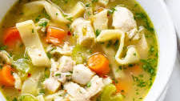

Chicken noodle soup

This delicious chicken noodle recipe will have you coming back for seconds. It is very easy to make with a delicious homemade broth! Add with a grilled cheese for a taste of home
Ingredients
- 1/2 tablespoon butter
- 2 celery sticks
- 3-4 large carrots diced
- 1 clove of garlic minced
- 10 cups chicken stock
- 1 teaspoon salt
- 1/2 teaspoon ground pepper
- 1/2 teaspoon of rosemary
- 1/2 teaspoon sage
- 1/2 teaspoon crushed red pepper flakes
- 5 cups egg noodles
- 3 cups chicken
- 1 teaspoon of bouillon chicken flavor
Steps
- Add butter, diced celery and carrots to a large stock pot over medium-high heat. Saute for 3 minutes. Add garlic and cook for another 30 seconds.
- Add chicken stock and season the broth with rosemary, sage, crushed red pepper, and salt (definitely TASTE the broth before adding more salt), and pepper. Taste and add a spoonful of “better than bullion” chicken or chicken bouillon cubes or granules as needed.
- Bring broth to a boil. Add noodles (either uncooked homemade egg noodles, or dry store-bought pasta) and cook just until noodles are al dente.
- Add chicken meat from the rotisserie chicken. Taste the broth again and add more seasonings, if needed.
- Store leftovers in an airtight container in the refrigerator for 4-5 days, depending on the freshness of the chicken you used.